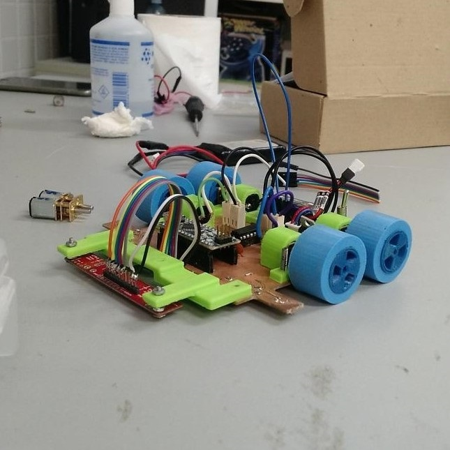
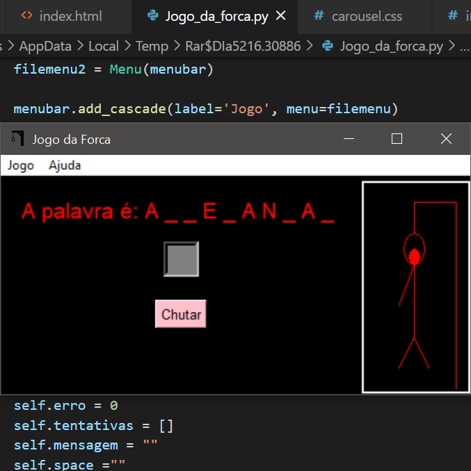
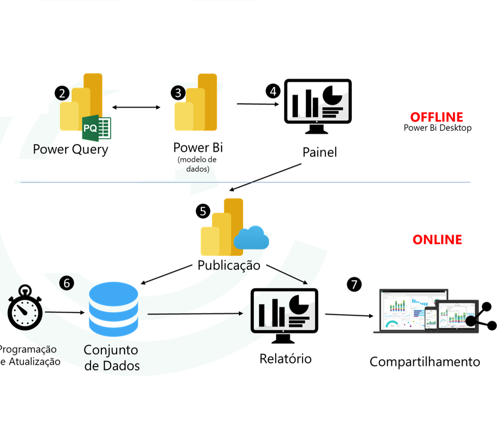
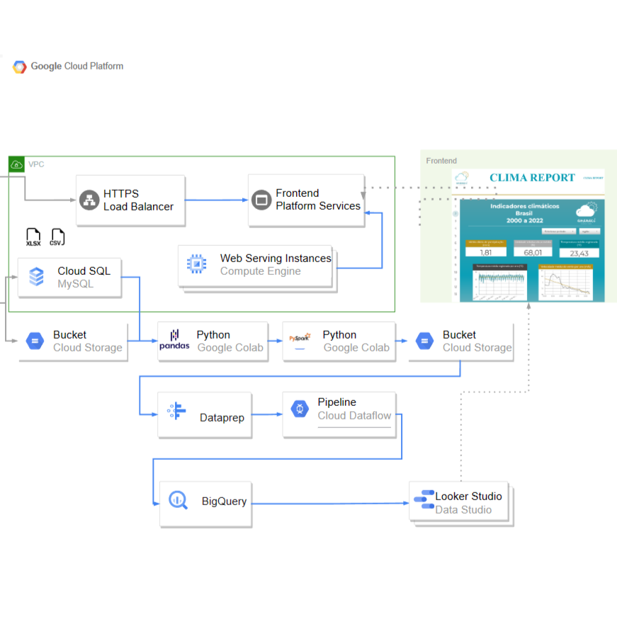

Todos os meus Projetos
Perry ! O robô seguidor de linha.
Fui um dos responsáveis por desenvolver Perry para disputar em competições nacionais e internacionais de robótica na categoria seguidor de linha pro. Perry usa de um sistema P&D embarcado em um Arduino Nano para conseguir percorrer o trajeto. Os seus sensores são optoacopladores que conseguem perceber a mínima variação de Luz!

Jogo da Forca! Um jogo da Forca feito inteiramente em Python.
Programar às vezes pode parecer uma tarefa chata, mas não se você fizer algo que realmente gosta. Pensando nisso desenvolvi este joguinho em python usando de variadas bibliotecas dentro da plataforma. Usando um dicionário da língua portuguesa de 30.000 palavras, o jogo da forca gera aleatoriamente palavras para uma interface tkinter desenvolvida com o intuito de ser simples e objetiva.
Download
SpotiPy ! Uma análise do que escuto utilizando a API do spotify
Este projeto utiliza da API do spotify para acessar os meus dados de utilização da plataforma. Com os dados em mãos foi feita uma análise utilizando pandas e um dos insights foi em relação aos artistas que mais ouço dentro de um ano. O chart cloud foi feito por meio do Chart.js.
Dashboards ! Utilizando o Power BI
Fui responsável por criar APIs para facilitar a criação de dashboards e visualização em tempo real de dados ligados a cadeira produtiva. Esses não posso mostrar, mas a gente pode conversar sobre !

Engenharia de Dados ! utilizando a GCP
Neste projeto, utilizamos algumas ferramentas cloud para construir uma plataforma Front-end regulada por meio de um balanceador de carga HTTP, o servidor web hospedava um dashboard criado no Looker Studio com uma análise dos dados de medições automáticas de mais de 200 bases de medição do INMET (Instituto Nacional de Meterologia) espalhadas pelo Brasil. O tratamento dos dados foi feito utilizando Pandas e Pyspark e também foi feito o uso de Pipelines com Apache Beam.
